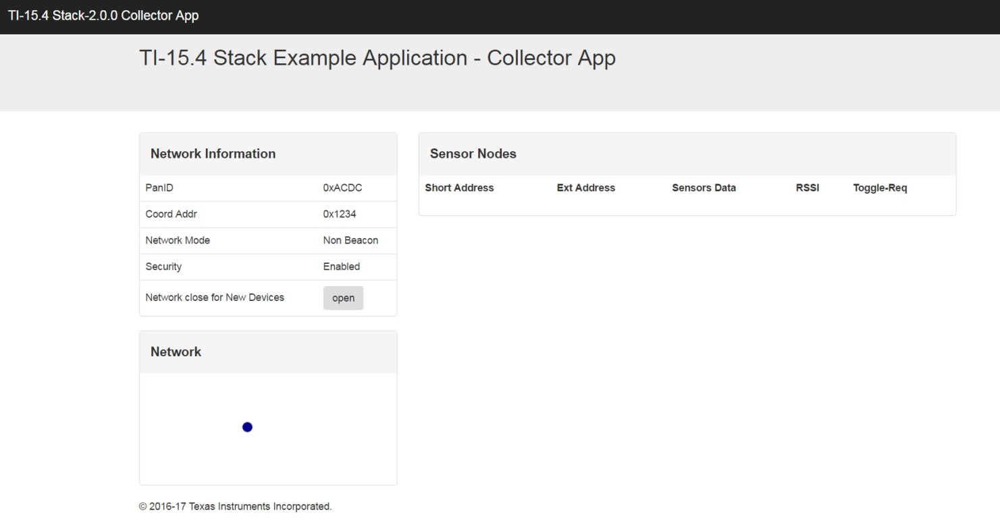

Running the Example Applications¶
This section provides instructions on how to run the out-of-box Example Applications.
Running the Collector and Gateway Applications¶
This section explains how to run the out-of-box Collector Application that creates the network and allows new devices to join to the network. Also, it explains how to run the Gateway Application that creates a local Web server to which users can connect using a Web browser to visualize the network information and reported sensor data from the sensor nodes. In addition, this chapter also explains how to connect sensor nodes to the network and observe data communication between the Linux Collector Example Application and the sensor nodes.
There are two ways to run the out-of-box Example Applications:
- Option 1: Run the existing prebuilt Linux examples found in the ${SDK_ROOT}/prebuilt directory.
- Option 2: Build and run the Linux applications manually from source.
Embedded Prebuilt Hex Files and Frequency Selection¶
The out-of-box prebuilt hex files use APIMAC_STD_US_915_PHY_1 (see Listing 2.).
/*! PHY IDs - 915MHz US Frequency band operating mode # 1 */
#define APIMAC_STD_US_915_PHY_1 1
/*! 863MHz ETSI Frequency band operating mode # 3 */
#define APIMAC_STD_ETSI_863_PHY_3 3
/*! 433MHz China Frequency band operating mode # 3 */
#define APIMAC_GENERIC_CHINA_433_PHY_128 128
915 MHz (PHY1), 863 MHz (PHY3), or 433 MHz (PHY128)
Note
Each PHY also has a SimpleLink Long Range, (SLR), mode of operation. This mode gives extended range, and has a data rate of 5kbps. The SLR PHY ID’s are:
- APIMAC_GENERIC_US_LRM_915_PHY_129
- APIMAC_GENERIC_CHINA_LRM_433_PHY_130
- APIMAC_GENERIC_ETSI_LRM_863_PHY_131
Use the following steps to change the embedded devices:
Modify the embedded config.h in the sensor example.
Compile and create the new sensor hex file using TI’s Code Composer Studio™ (CCS) software
Program the Sensor module with this new hex file.
Use the following steps to change the Linux application:
Find the collector.cfg file (it is an ASCII text file). The example Linux Collector Application reads this file at start-up.
Modify the config-phy-id line, as shown in Listing 3..
config-percentfilter OxOff config-phy-id 1 config-scan-duration 5
Connect the CoProcessor¶
Program the CoProcessor LaunchPad as shown in Figure 16. (A) and program the Sensor LaunchPads as shown in Figure 16. (B) with the hex files, as described in Program the Launchpads or Embedded Prebuilt Hex Files and Frequency Selection.
Figure 16. Connect the CoProcessor LaunchPad
About /dev/ttyACM0¶
Linux supports several types of USB serial ports. One type is /dev/ttyUSB<number>. Another type is /dev/ttyACM<number>.
Linux assigns the numbers in order, as each USB device is enumerated. For example: the first device is /dev/ttyACM0, the second device is /dev/ttyACM1, and so on.
Specifically, the LaunchPad shows as a /dev/ttyACM<number> device. The LaunchPad debug interface actually presents two serial interfaces—this example uses only the first interface, also known as /dev/ttyACM0.
Note
FTDI serial cables show as /dev/ttyUSB<number>.
The out-of-box collector.cfg file assumes that the LaunchPad is exactly /dev/ttyACM0.
A software developer usually has many devices connected to a development machine through the USB interface. These other devices may also present another /dev/ttyACM<some_number> interface (for example, a mobile phone, or a tablet).
Thus, if another serial device is already connected (or enumerated) when the LaunchPad is connected it may (or may not) appear as /dev/ttyACM0.
To determine what is present, use the ls command shown in Figure 17..
Figure 17. dev/ttyACM0 Code
Edit the collector.cfg file accordingly. Solutions:
- Option 1: Unplug everything except the CoProcessor, which should remain connected.
- Option 2: Sometimes unplugging everything is not a viable solution; so the other alternative is to edit the collector.cfg file and change the devname line shown in Listing 4..
; If collector app connects directly to a UART (no-npi-server) this is how
; to connect.
[uart-cfg]
;; Launchpads use USB and show up as: /dev/ttyACMO and ACMl
;; Solutions using an FTDI or Prolific cable use /dev/ttyUSBO or USBl
;; Hard serial ports are: /dev/ttySO to ttyS9
;devname = /dev/ttyUSBl
devname = /dev/ttyACMO
baudrate = ll52OO
; we use the default flags
flag = default
Option 1: Running Application Using Prebuilt Binaries¶
Run the prebuilt example binaries with the following steps:
- Program the LaunchPads, as described in Running the Collector and Gateway Applications.
- Change to the prebuilt directory (on the host or on the BBB).
- Run the run_demo.sh script.
- On the Linux x86 host, the Web browser should launch automatically and connect to the desired IP address and port.
- On the BBB, launch your browser manually; then, visit the specified website address (the shell script will display a link with the IP address and port ID).
- Go to Joining the Sensor Nodes to the Network.
Running the Example Linux® Applications After Building From Source¶
Choosing this option means that the following items have been completed:
- The LaunchPad development kits have been programmed as required (see Connect the CoProcessor).
- The CoProcessor LaunchPad is connected as /dev/ttyACM0.
The steps listed in Start the Collector Example Application manually perform the same steps the run_demo.sh script performed in Option 1: Running Application Using Prebuilt Binaries.
Start the Collector Example Application¶
Change to the collector directory: ${root}/example/collector.
Note
First, it may be necessary to visit and build the various library component directories. If required, type make to build the Collector Application.
Launch the Collector Application and, if desired a specific configuration file. The default configuration filename is collector.cfg. The configuration file can be specified on the command line.
$ cd ${SDK_ROOT}/example/collector bash$ make clean (optional) $ make host (optional) $ ./host_collector collector.cfg & # or: # Cross-compile the BBB version and copy the executable to the BBB. $ make bbb $ scp bbb_collector root@192.168.7.2:~/. $ ssh root@192.168.7.2:~/. # ./bbb_collector collector.cfg &
Note
If using a VM, be sure to connect the LaunchPad USB device to the VM.
The device /dev/ttyACM0 is the debug serial port associated with the LaunchPad. Details about this port and the /dev/ttyACM1 device can be found in the LaunchPad documentation.
By default, the configuration files contain assumptions that the CC13xx/CC26x2 CoProcessor application uses /dev/ttyACM0. If more than one device is present or if other ACM communications devices are present, it may be necessary to edit or change the configuration file.
See the devname selection in the collector.cfg file for details.
Your username must be a member of the group dialout (see Linux® Development Host for details).
Interactive Command Line Interface¶
If a command line interface (CLI) is prefered to a web GUI then
build the collector without the IS_HEADLESS symbol defined in the Makefile.
In this mode an interactive terminal is launched with the collector that can be
used to control the network, issue commands, and upgrade sensor device firmware
using TI 15.4-Stack native OAD. You can use the following commands:
- sxx: Select a device (ex. ‘s1’ or ‘s0x1234’)
- o: Open/Closes the network for devices to join
- t: Send an LED toggle request to the selected device
- v: Send a version request to the selected device
- u: Send an update request to the selected device
- fxx: Read a firmware binary. This file can now be sent to a selected device using the ‘u’ command (ex. ‘f sensor_oad_cc1310lp.bin)
Note
To use the linux gateway only define IS_HEADLESS when building the
collector. To have both options do not define IS_HEADLESS.
Start the Gateway Application¶
When using Option 1 in Option 1: Running Application Using Prebuilt Binaries, the following steps are automatically performed by the run_demo.sh script in the prebuilt directory.
In a separate shell window, do the following:
Enter the following:
$cd ${SDK_ROOT}/example/gateway
Use the following for Ubuntu Linux:
$nodejs gateway.js &
Use the following on the BBB:
#node gateway.js &Note
There is a name conflict between various versions of Linux with respect to the application called node, which is detailed in the following: https://bugs.debian.org/cgi-bin/bugreport.cgi?bug=614907#108 Currently, the Ubuntu distribution uses the name nodejs, and the BBB uses the name node.
Socket Configuration:
The Gateway Application is hard coded to use localhost port/service 5000 to communicate with the Linux Collector application. The Collector socket configuration (port number or service number) is specified in the collector.cfg file.
For details see the following:
${SDK_ROOT}/example/collector/collector.cfg ${SDK_ROOT}/example/gateway/appClient/appclient.js
Start your Web browser.
When using Option 1 in Option 1: Running Application Using Prebuilt Binaries, the following are automatically performed by the run_demo.sh script in the prebuilt directory.
The Gateway (Node.js) Web server operates on Port 1310.
If you are running the gateway on your Linux host, use the following: http://localhost:1310
Otherwise, substitute your BBB IP address as required. Next, see the following screen as shown in Figure 18..
Figure 18. TI 15.4-Stack Gateway Application Web Application Served by the Local Web Server After Network Start-Up
Joining the Sensor Nodes to the Network¶
After starting, the network the Collector Application (by default) closes the network for new device joins. When the network is open, new devices can join the network. To open the network, select the Open button on the Web browser.
After the network is open, power up the CC13xx/CC26x2 LaunchPad programmed with the Sensor Example Application. When the device joins the network, the red LED on the Sensor LaunchPad turns on. The new device is then be visible and sensor- data values appear on the Web page. After connecting several sensor nodes to the network, a screen similar to Figure 19. is visible.
Note
In frequency-hopping configuration mode, the radio network is always open to new nodes.

Figure 19. TI 15.4-Stack Gateway Application Web Application Served by the Local Web Server After Devices Joined to the Network
Next, using the front end enables sending of the Toggle LED commands to the sensor nodes. After pressing the button, the red LED Toggle turns on the desired end node of the CC13xx/CC26x2 LaunchPad.
Note
After pressing the Toggle LED button, a delay of several seconds may occur before the red LED on the desired end node toggles because the out- of-box sensor nodes are in sleep mode. The sensor nodes will wake up after a sleep interval to retrieve the command buffered (in this case Toggle-LED request message) from the PAN coordinator (collector).
Collector Application Configuration¶
The definitive description of the TI 15.4-Stack network configuration items is described in the TI 15.4-Stack Software Developer’s Guide A short summary of the key network configuration items follows.
Sensor and Collector Configuration¶
The embedded devices have a hard-coded configuration, which is set by the config.h file in the respective prebuilt directories. There is a separate config.h file for the sensor and the Collector Application; these settings must match, otherwise communication does not occur.
Linux® versus Embedded config.h Files¶
In the embedded device, various settings are compile time constants provided by the config.h file. For example, CONFIG_SECURE In the embedded device, CONFIG_SECURE is a simple #define, as shown in the following::
/*! Security Enable - set to true to turn on security */
#define CONFIG_SECURE true
In contrast, the Linux implementation uses a runtime variable rather than a compile time constant; the Linux implementation has two parts.
Linux Part 1 is a global variable; the CONFIG_SECURE macro refers to the following::
/*! Security Enable - set to true to turn on security */ extern bool linux_CONFIG_SECURE; #define CONFIG_SECURE linux_CONFIG_SECURE #define CONFIG_SECURE_DEFAULT false
The Collector and other files (that is, CLLC and CSF) still use the CONFIG_SECURE macro; the macro instead resolves to a global variable.
Linux Part 2: The global variables are in the linux_main.c file along with their default values. At start-up, the code for the linux_main.c file reads and parses the application configuration file (the contents of which may alter the value of the configuration values).
The default names of the configuration files are collector.cfg and npi_server2.cfg.
Setting the Channel of Operation¶
Configure the desired bit mask by setting CONFIG_CHANNEL_MASK in the
config.h or config-channel-mask in collector.cfg to select the
desired channel or channels.:
/*!
Channel mask - Each bit indicates if the corresponding channel is to be scanned First byte represents channel 0 to 7 and the last byte represents channel 128 to 135
*/
#define CONFIG_CHANNEL_MASK { 0x0F, 0x00, 0x00, 0x00, 0x00, 0x00, \
0x00, 0x00, 0x00, 0x00, 0x00, 0x00, \
0x00, 0x00, 0x00, 0x00, 0x00 }
In the Linux configuration file, the user provides a list of channel numbers rather than a byte array of bits.
Setting Up Network Operation Mode¶
Network can be secure or nonsecure, beacon enabled or disabled, or in frequency-hopping mode. The embedded devices are configured through their config.h files; the important items for desired mode of network operation are described as follows:
Non-beacon mode
Set the defines for beacon order and superframe order as described in the following, and set the frequency-hopping mode define to false.:
#define CONFIG_MAC_BEACON_ORDER 15 #define CONFIG_MAC_SUPERFRAME_ORDER 15 #define CONFIG_FH_ENABLE false
Beacon-enabled mode
Set the defines for beacon order and superframe order to a desired value other than 15 such that the superframe order is less than the beacon order. Also, set the CONFIG_FH_ENABLE to false, as shown in the following::
#define CONFIG_MAC_BEACON_ORDER 8 #define CONFIG_MAC_SUPERFRAME_ORDER 6 #define CONFIG_FH_ENABLE false
Frequency-hopping mode
Frequency-hopping mode is selected if CONFIG_FH_ENABLE is set to true. In this configuration, values for beacon order and superframe order must be 15.:
#define CONFIG_MAC_BEACON_ORDER 15 #define CONFIG_MAC_SUPERFRAME_ORDER 15 #define CONFIG_FH_ENABLE true #define CONFIG_SECURE true
The Linux collector can be configured by editing collector.cfg.
Set Up MAC Data Frame Security¶
For beacon or nonbeacon operation, set security to true or false by using the define listed here in the config.h file.
/*! Security Enable - set to true to turn on security */
#define CONFIG_SECURE true
Setting Up Sensor Reporting Interval¶
The sensor reporting interval is defined in the collector.c file. Define the desired value in milliseconds for the sensor reporting interval for the define listed here::
/* Default configuration reporting interval, in milliseconds */
#define CONFIG_REPORTING_INTERVAL 30000
Setting Up Polling Intervals for Sensor Devices in Sleep Mode¶
Devices that are in sleep mode poll intervals because nonbeacon mode and frequency-hopping mode can be configured by setting desired value in milliseconds for the following define in the collector.c file::
/* Default configuration polling interval, in milliseconds */
#define CONFIG_POLLING_INTERVAL 3000
Serial Bootloader Application (Flash Update)¶
To use the Serial bootloader application, use the application executable with arguments described as follows:
./host_cc13xx-sbl DEVICE FILENAME OPTIONS
or
./bbb_cc13xx-sbl DEVICE FILENAME OPTIONS
where:
DEVICE
- is the serial interface (for example, /dev/ttyACM0).
FILENAME
- is the Intel hex or binary file to flash program into the device.
OPTIONS
are:
–e (erase)
–p (program)
–v (verify)
Program the CC13xx/CC26x2 device with an application that enables the bootloader feature (explained in the Bootloader chapter of the CC13x2 CC26x2 SimpleLink Wireless MCU Technical Reference Manual). The CoProcessor example embedded application demonstrates the bootloader feature. Specifically, the CoProcessor applications enable the bootloader feature through the DIO13 Pin (Button 1 on the CC13xx/CC26x2 LaunchPad). To force entry into the bootloader, use the following steps:
- Connect the LaunchPad.
- Start the flash update tool; the tool will display connecting…
- Press and hold the LaunchPad BTN-1.
- Press and release the LaunchPad RESET button.
- The application connects and performs the flash update (see Figure 20. for the connection diagram).
Figure 20. Bootloader Connection Diagram
Figure 21. shows an example of how to use the application; the following steps describe the process:
- On the x86 Linux machine, clean and build the BBB version.
- Using SCP, copy the executable and hex files to the BBB.
- Obtain a shell prompt on the BBB.
- Execute the flash tool (see the button-press sequence described in the previous set of steps).
Figure 21. Screenshot Showing How to Run the Example Application